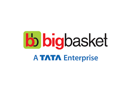
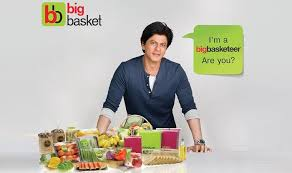
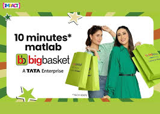

From trust-building pioneer to 10-minute quick commerce leader.

SRK built online grocery trust. Kapoor sisters redefined 10-min delivery. Category pioneer → quick commerce leader through perfect evolution.
Case study: trust foundation → speed differentiation → data optimization. Grocery marketing mastery.
Barrier: "Can I trust online groceries?" SRK in relatable home setting made it everyday normal, not experimental.
SRK choice = trust multiplier. Convenience + reliability messaging reduced first-time hesitation massively.
"Category pioneers don't sell products — they normalize behavior. SRK made online grocery feel like home delivery chai."
TV dominance + data-optimized channels drove traffic + adoption. Trust → repeat behavior established.

Market evolution: convenience → speed. 10-min delivery needed cultural anchor. Karisma + Kareena = nostalgia + modernity.
Humor + iconic sister chemistry made lightning delivery entertaining, not technical.
"Speed claims are easy. Making them culturally sticky is genius. Kapoor sisters made 10-min groceries a family conversation."
TV + digital series kept messaging fresh. Differentiated BigBasket as quick commerce leader.

SRK normalized online grocery for skeptical first-timers.
Real-time analytics shifted budget to high-conversion channels.
One clear idea per campaign = instant understanding + recall.
Kapoor sisters bridged generations through familiarity + modernity.
Matched messaging to market maturity perfectly.
Multiple films kept messaging fresh while reinforcing core idea.
BigBasket's genius: trust foundation → speed differentiation → data optimization. SRK normalized category. Kapoor sisters accelerated it. Perfect grocery evolution.
Universal formula: match messaging to market maturity. Pioneers build trust. Leaders redefine expectations. BigBasket executed both flawlessly.
For any brand: normalize → accelerate → optimize relentlessly. Category leadership follows.
At Brand Business Talk, we help brands with research, strategy, market insights, and growth recommendations. Let's build your brand growth strategy together.